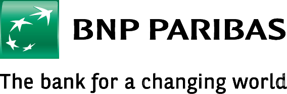

Social Media Data in Humanities and Social Sciences Research প্রযুক্তিনির্ভর গবেষণার কয়েকটি দিক
Event Poster
Resource Person
How do you research social media without a background in computer science? This one-day orientation workshop introduces humanities and social sciences researchers to the methods, tools, and ethical frameworks needed to work with social media as a research object. From data collection to analytical approaches, the session equips participants with a practical understanding of technology-driven research — its strengths, its limitations, and its biases. কম্পিউটার সায়েন্সের পটভূমি ছাড়া সোশ্যাল মিডিয়া নিয়ে কীভাবে গবেষণা করা সম্ভব? এই একদিনের ওরিয়েন্টেশন কর্মশালায় মানবিক ও সমাজবিজ্ঞানের গবেষকদের সোশ্যাল মিডিয়াকে গবেষণার বিষয় হিসেবে ব্যবহারের পদ্ধতি, সরঞ্জাম এবং নৈতিক কাঠামো পরিচয় করিয়ে দেওয়া হবে। তথ্য সংগ্রহ থেকে বিশ্লেষণ পদ্ধতি পর্যন্ত — প্রযুক্তিনির্ভর গবেষণার সুবিধা, সীমাবদ্ধতা ও পক্ষপাত সম্পর্কে ব্যবহারিক ধারণা দেওয়া হবে।
This workshop is designed as the methodological gateway for the Platform Bengali project — establishing the ethical and technical foundations that inform all subsequent research activities, from YouTube creator interviews to the MT workshop and the academic conference. এই কর্মশালা প্ল্যাটফর্ম বেঙ্গলি প্রকল্পের পদ্ধতিগত প্রবেশদ্বার হিসেবে পরিকল্পিত — যা পরবর্তী সমস্ত গবেষণা কার্যক্রমের জন্য নৈতিক ও প্রযুক্তিগত ভিত্তি স্থাপন করবে।
Topics Covered
Platform Bengali is a foundation project sponsored by the India Foundation for the Arts (IFA) under the Arts Research programme. Contact: bhashascope@gmail.com প্ল্যাটফর্ম বেঙ্গলি ইন্ডিয়া ফাউন্ডেশন ফর দি আর্টসের (আই এফ এ) কলা গবেষণা কার্যক্রমের অন্তর্ভুক্ত একটি ফাউন্ডেশন প্রকল্প। যোগাযোগ: bhashascope@gmail.com